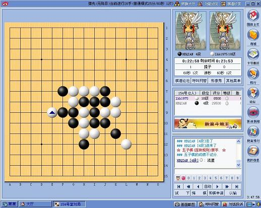

李洪斌：新浪围棋下五子
#1 李洪斌：新浪围棋下五子作者：有志青年 发表时间：2010-9-8 9:31:00
原文地址：http://hi.baidu.com/lihongbin/blog/item/673f8f8fc35d20f4513d9298.html
现在ORC没法下棋了，QQ游戏的时间太短，其他平台虽有可以设置时间的，但是界面不够美观。今天和朋友在新浪围棋下了几盘五子棋，感觉虽然有诸多不足之处，但界面非常养眼（尤其最大化窗口后），值得互相熟悉的棋友尝试。
不存在提子的情况，新浪围棋内的五子棋是专门的，不是用围棋规则来下五子棋。只是新浪的五子棋规则方面不完善，比如虽然有禁手和连珠规则，但是在下的时候并没有起作用（在选择规则时候有相关提示，但实际无效果，或许是付费会员才能用？）。时限方面每方最多25分钟，读秒最多1分钟|每步。

下载页面
http://duiyi.sina.com.cn/download.htm
［此帖子已被 有志青年 在 2010-9-8 9:43:05 编辑过］
#2 Re:李洪斌：新浪围棋下五子作者：龙小小 发表时间：2010-9-8 10:28:01
嗯 界面是好漂亮的
#3 Re:李洪斌：新浪围棋下五子作者：黄药师 发表时间：2010-9-8 11:00:43
orc没有了 太可惜了！！
#4 Re:李洪斌：新浪围棋下五子作者：潇洒 发表时间：2010-9-8 11:58:25
ORC现在还可以上））#5 Re:李洪斌：新浪围棋下五子作者：有志青年 发表时间：2010-9-8 13:05:37
可以去霸占“塞北大厅”
#6 Re:李洪斌：新浪围棋下五子作者：水月 发表时间：2010-9-8 19:06:09
不小心吃子了咋办？#7 Re:李洪斌：新浪围棋下五子作者：有志青年 发表时间：2010-9-8 19:44:59
没有吃子呀，其中有五子棋专门的规则的。#8 Re:李洪斌：新浪围棋下五子作者：极地剑客 发表时间：2010-9-8 20:30:59
界面和ORC很象啊~对了~有网页在线下五子的~有点象以前TW和263那样的~
#9 Re:李洪斌：新浪围棋下五子作者：厦门顽童 发表时间：2010-9-8 22:48:04
ORC现在还可以用呀#10 Re:李洪斌：新浪围棋下五子作者：五子棋评论员 发表时间：2010-9-9 0:08:49
不怎样#11 Re:李洪斌：新浪围棋下五子作者：黄药师 发表时间：2010-9-9 11:08:36
orc 经常性掉线 卡机。#12 Re:李洪斌：新浪围棋下五子作者：江湖狼踪 发表时间：2010-9-10 11:44:57
下载了是围棋，没有五子棋啊